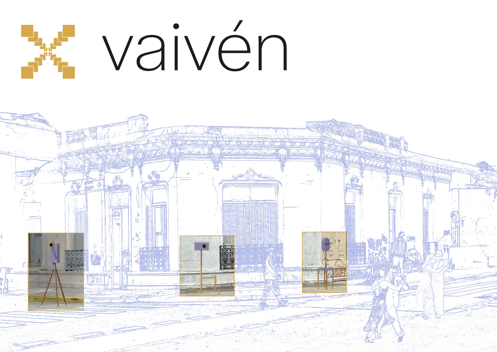
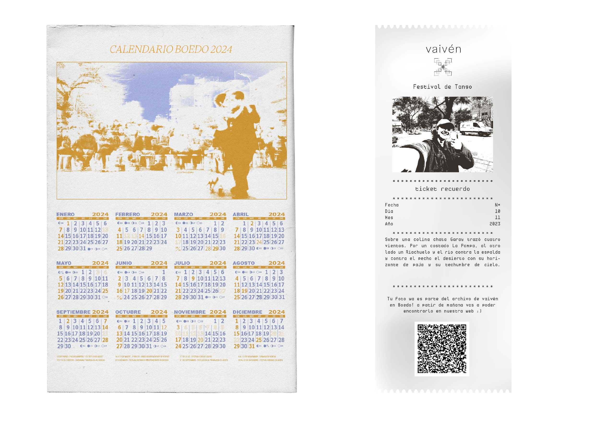
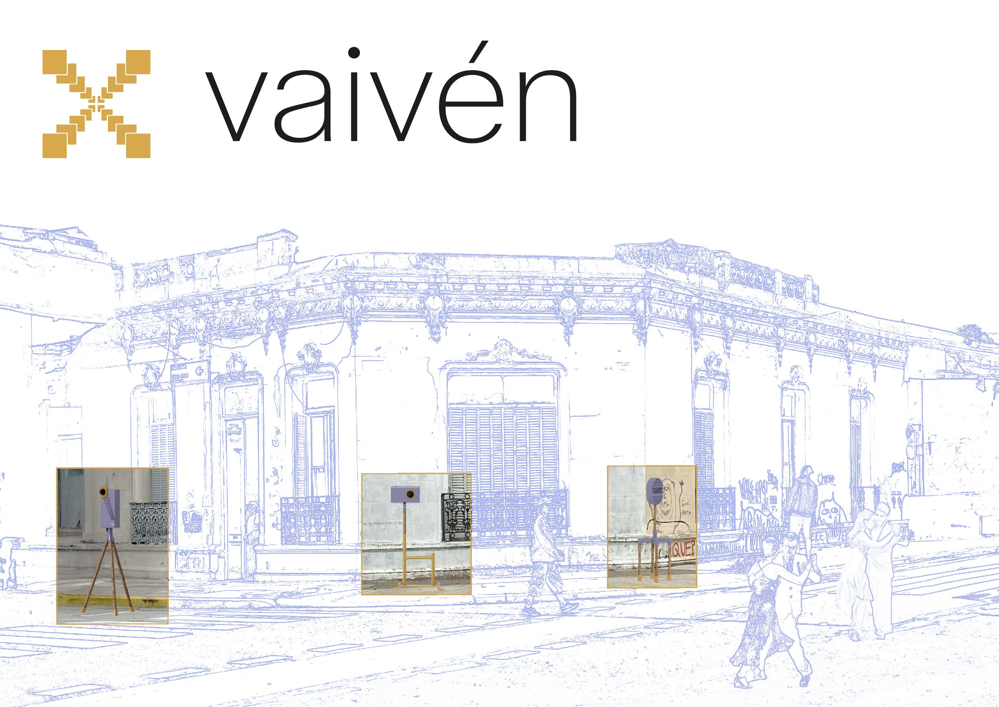
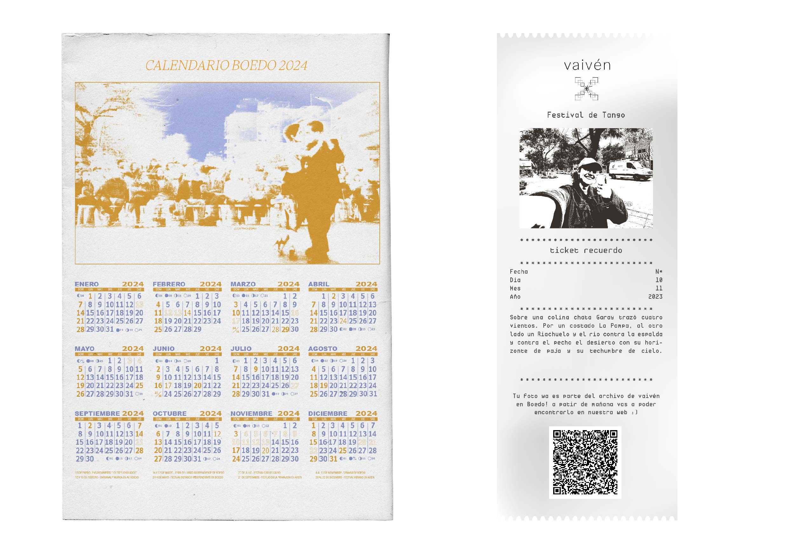

Desarrollo conceptual y gráfico de proyecto integral que cuenta con piezas gráficas, objetuales, audiovisuales y editoriales. El proyecto nace de la necesidad de registrar las identidades barriales para su conservación en el avance de la edificación dentro de la Ciudad Autónoma de Buenos Aires.
Link de prototipo web en figma
Trabajo en conjunto con Candela García Sindes.